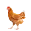

Animal Grimoire

ChickensOverview
Chickens were perceived as being twice born (once when the egg is laid, once when it hatches) and were regarded as sacred. Black is the color of night, fertility, and gestation, so black hens were considered the most sacred of all. Many magic spells stipulate that feathers or eggs must come from a pure black hen. The very first egg laid by a black hen is considered extremely magically powerful and is coveted for love and fertility spells.
Hecate and Sacred Associations
Black hens are identified with and sacred to the supreme witch goddess Hecate. This spiritual memory survives in the Mother Goose rhyme, "Heckity peckity, my black hen." In some parts of Britain, witches were allegedly incapable of approaching black chicken feathers, and so on Halloween it was customary to kill a black hen. The hen was cooked but the feathers were artfully arranged: hung onto the door of the house, over the bed or onto children or horses. It sounds suspiciously like a surreptitious method of offering a sacrifice to Hecate.
African-Derived Magic and Cleansing
In African-derived magic, black hen's feathers are used for magical cleansings. Cleansing spells remove negative energy, spiritual debris, curses and malevolent spells. Burn the feathers to a very fine ash, and then dust them on the person to be cleansed. Black hens counter malevolent spells and allegedly remove jinxes.
Frizzly Hens and Hoodoo Traditions
In the United States, frizzly (black and white speckled) hens are the substitute of choice and may even be preferable. Should the feathers be frizzly, it is immaterial whether the bird is a hen or rooster. In the hoodoo and conjure traditions of the Southern United States, frizzly hens or roosters were kept in the yard to scratch up any "tricks" (malevolent spells left on the property to fester and cause harm). Frizzled poultry was a valuable commodity: the bird might also be loaned or rented out to others in need. A renowned New Orleans root doctor went by the name of The Frizzly Rooster, his specialty lifting jinxes, hexes, and tricks.
Alectromancy: Divination by Poultry
Chickens have served as oracles since ancient days. Various methods exist, however alectromancy is the standard method of divination by poultry. Individual letters of the alphabet are used to form a circle. An equal quantity of wheat is placed on each letter; the bird is placed in the center of the circle and carefully observed as it eats the grain. The corresponding letters should spell out a prophecy, which may then be interpreted. It is a primitive ancestor of the modern ouija board.
Ancient Military Oracle
Ancient armies typically traveled with flocks of poultry, to lay eggs but also to perform grain divination. In theory the greater the number of chickens and circles, the greater the possible complexity of the message. A famous story describes a Roman general whose fleet was about to attack Carthage during the first Punic War. Before the attack was mounted, chickens were brought on deck and grain scattered for them. The seasick birds refused to eat. Rather than paying attention to the oracle, which clearly advised hesitation, the enraged, impatient general announced, "If they won't eat, let them drink!" and ordered the poultry thrown overboard. The Romans suffered a crushing defeat.